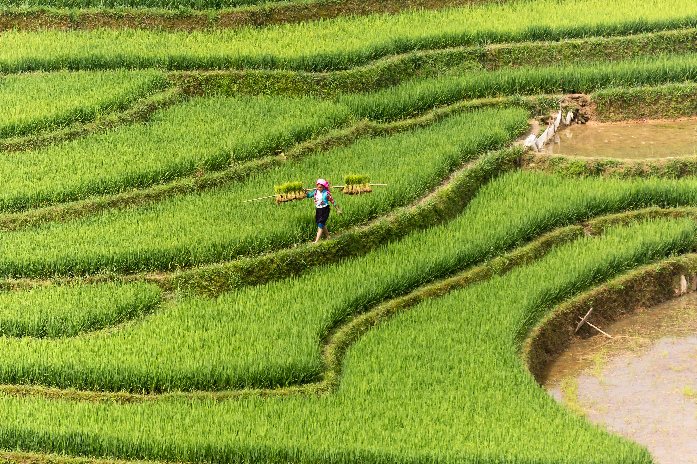

Deep Water Rice Varieties
Discover rice varieties that can survive in deep water conditions for extended periods.
- Survives water depths up to 4 meters
- Enhanced stem elongation ability
- Better yield in flood conditions